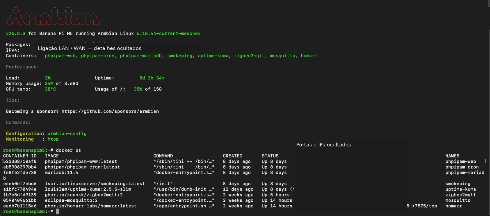
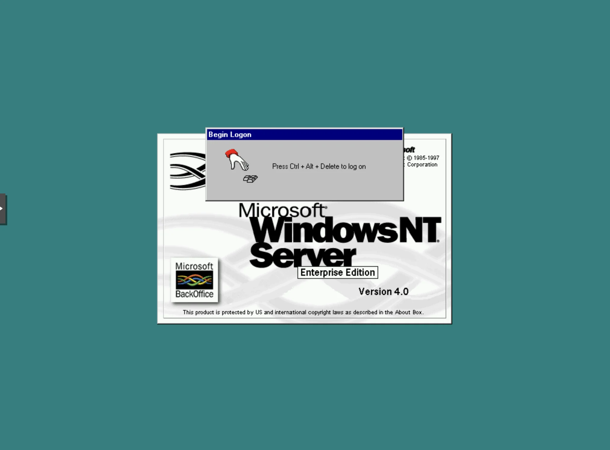
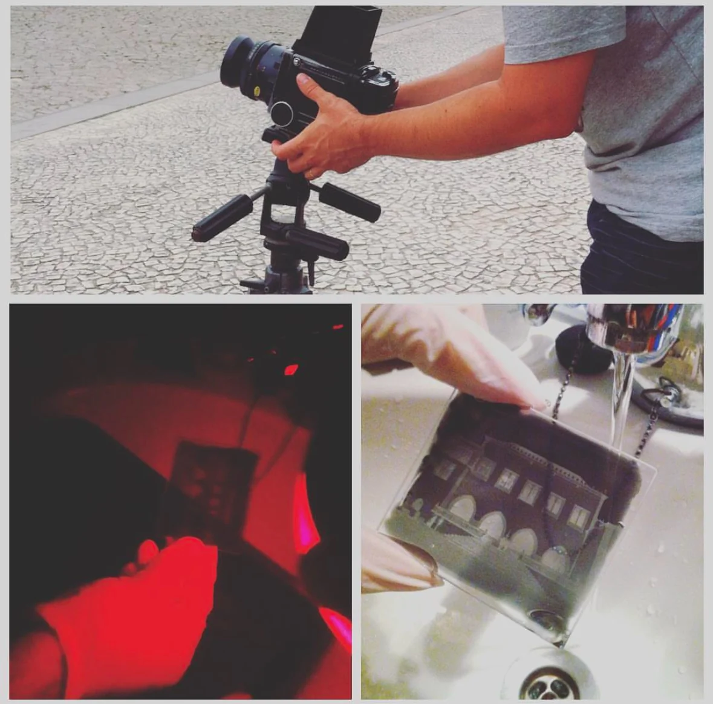
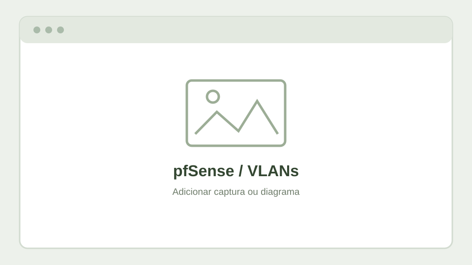

Uma biblioteca técnica, organizada por temas.
Projetos, testes e apontamentos reunidos por área: infraestrutura, laboratório, automação e interesses pessoais. Cada tema tem a sua página, sem misturar a Wiki com o CV.

Home Lab: uma rede para experimentar
Firewall, switches geríveis, VLANs, servidores Proxmox e automação num ambiente de testes que continua a evoluir.
Conhecer o projeto →Explorar os projetos.
12 projetos
 Infraestrutura
InfraestruturaHome Lab
Visão global da infraestrutura e dos serviços.
Explorar →RedesRedes e VLANs
Segmentação, firewall, switches e Wi‑Fi.
Explorar → Firewall / WAN
Firewall / WANpfSense e failover
Gateways, continuidade de ligação e comutação automática da fibra para LTE.
Explorar → Servidores
ServidoresProxmox
Virtualização, containers, armazenamento e backups.
Explorar → Sistemas históricos
Sistemas históricosLaboratório retro — Windows NT 4.0
Máquinas virtuais Windows NT 4.0 em laboratório: testes de instalação, drivers antigos e snapshots no Proxmox.
Ver laboratório retro →
Serviços / DockerBanana Pi M5
Um pequeno servidor para monitorização, automação e gestão da rede.
Explorar → Automação
AutomaçãoHome Assistant
Automação, sensores, MQTT e Zigbee.
Explorar →DashboardHomarr
Painel de acesso aos serviços e organização.
Explorar → Operações
OperaçõesMonitorização
Verificação de serviços, alertas e continuidade.
Explorar →
LaboratórioOutros projetos
Retrocomputação, PXE, eletrónica e experiências.
Explorar →Eletrónica / ÁudioESP32, DSP e experiências de áudio
Displays circulares, VU meters, sinais digitais e projetos em desenvolvimento.
Explorar → Comunicações
ComunicaçõesRadioamadorismo / DMR
Experiências, artigos e participação na comunidade.
Explorar →
CriativoFotografia
Portefólio e artigos de fotografia.
Explorar →
Web / InfraestruturaCloudflare e alojamento local
Domínios, DNS e WordPress em servidor próprio, sem depender de alojamento tradicional.
Explorar →Como ler esta Wiki
O que vais encontrar
- Explicações simples sobre o objetivo de cada projeto e as tecnologias utilizadas.
- Capturas de ecrã e diagramas acompanhados de contexto.
- Exemplos documentados, problemas encontrados e soluções adotadas.
- Artigos de radioamadorismo e fotografia, quando forem adicionados.